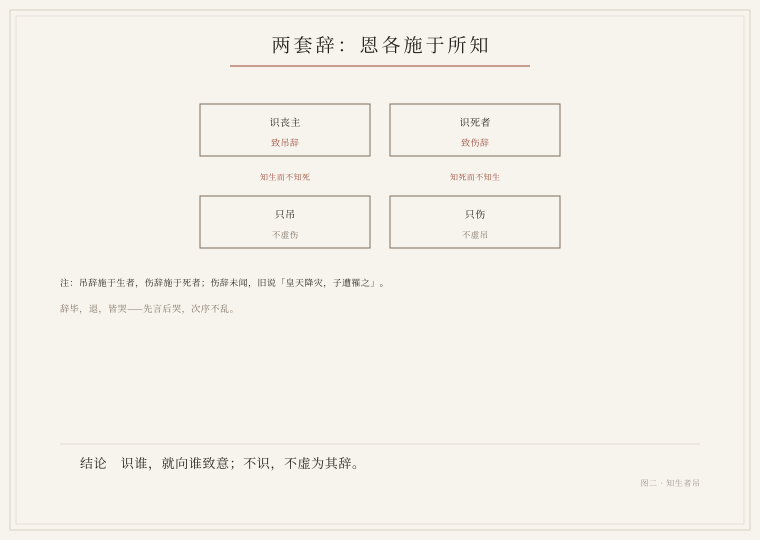

曲礼上 · 一·一百零二 · 第 100 课
识其生者则吊，识其死者则伤；只识生不识死，则吊而不伤；只识死不识生，则伤而不吊。吊与伤，是两套辞。
说什么事：知生者吊，知死者伤；知生而不知死，吊而不伤；知死而不知生，伤而不吊。
落在哪一层：仪，兼及礼意。辞随所识。
为何编在此位：上节言居丧之节，此节言吊丧之辞。由居丧者转到吊者。
【经】知生者弔，知死者傷。知生而不知死，弔而不傷。知死而不知生，傷而不弔。
【注】人恩各施於所知也。弔、傷，皆謂致命辭也。《雜記》曰，諸侯使人弔，辭曰：「寡君聞君之喪，寡君使某，如何不淑！」此施於生者，傷辭未聞也。說者有弔辭云：「皇天降災，子遭罹之。如何不淑！」此施於死者，蓋本傷辭。辭畢，退，皆哭。
吊 注「吊、伤，皆谓致命辞也」。吊辞施于生者（丧主）。
伤 伤辞施于死者。
知生 识丧主。知死 识死者。
如何不淑 注引《杂记》吊辞。不淑，不幸也。
皇天降灾，子遭罹之 注引旧说，以为「盖本伤辞」——郑疑其非吊辞，正是伤辞。
辞毕，退，皆哭 注。疏「吊辞乃使口致命，伤辞当书之于板，使者读之而奠致殡前」。
识丧主的，行吊辞；识死者的，行伤辞。只识丧主不识死者，只吊不伤；只识死者不识丧主，只伤不吊。
一节讲两套辞的分工。吊是对活人说的，伤是对死者说的。人情有限，恩各施于所知：识谁，就向谁致意；不识，不虚致。
第一层 恩施于所知 注首句。礼不要求人对不认识的人也作深悲，只要求对认识的人把话说到。
第二层 两辞之别 吊辞慰生，伤辞哀死。辞不同，所对者不同。
第三层 不虚致 不识死者而伤，是空话；不识丧主而吊，是无的之辞。礼恶其虚。
第四层 辞与哭 注「辞毕，退，皆哭」。辞是言，哭是情；先言后哭，次序不乱。
与今日何干 同事家中有丧，你识其人就致哀；不识逝者，不必编一套追念。此节教的是「话说到份上」。
| 左 | 右 |
|---|---|
| 知生者吊 | 识丧主，致吊辞 |
| 知死者伤 | 识死者，致伤辞 |
| 吊辞 | 施于生者，慰之 |
| 伤辞 | 施于死者，哀之 |
| 不虚致 | 不识则不虚为其辞 |
| 辞毕退皆哭 | 先言后哭，次序分明 |
画两卷简册并置案上：左卷已展、末行留白（示吊辞已读毕），右卷未展、以绳束之（示伤辞未用）；两卷之间一枚小木牌，牌面无字。案前地面有一处跪坐的浅痕。不画人、不写文字。赭色只在束卷的绳。
